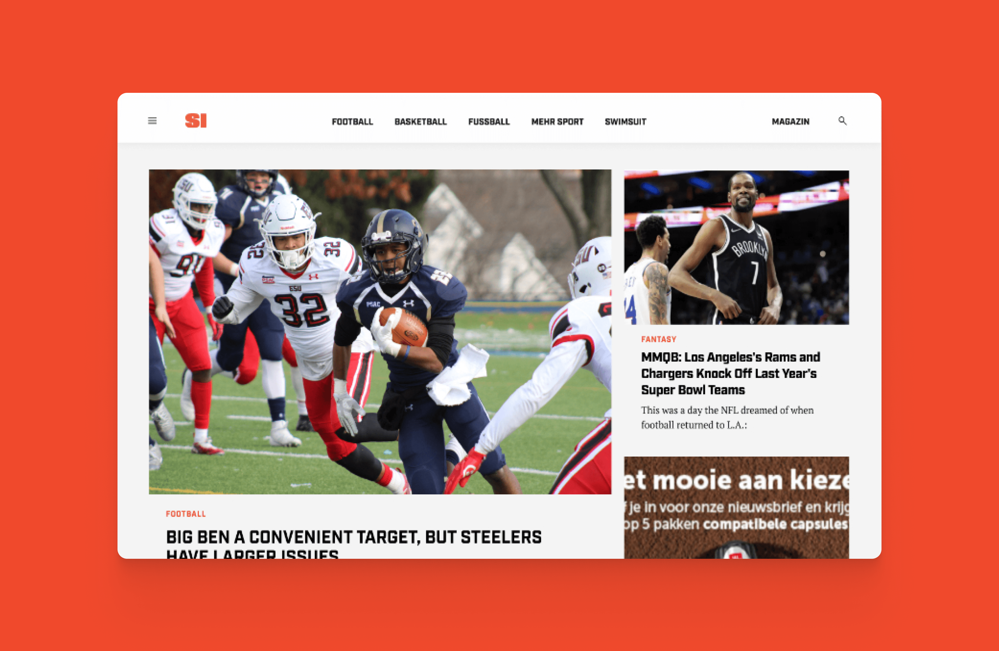
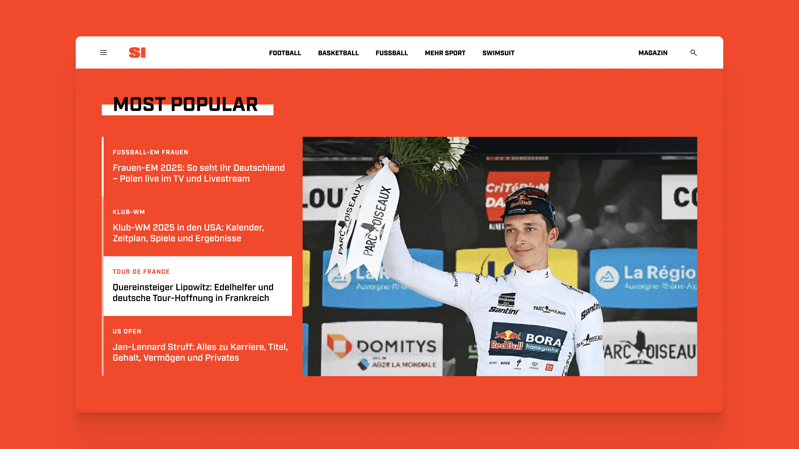
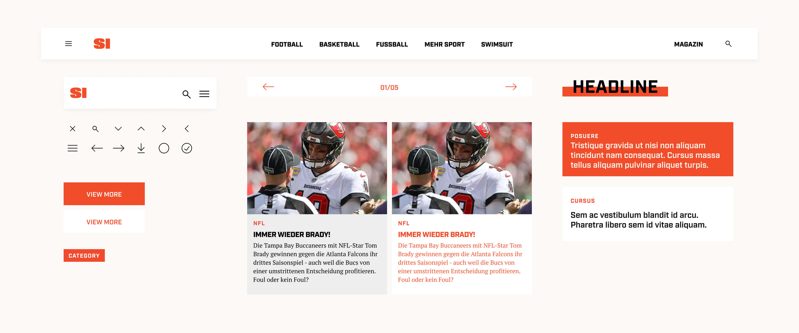

Sports Illustrated is a multi-award-winning media brand and, as the market leader in the USA, shapes modern sports culture. To enter the German market with its own edition, a brand new website was needed. The goal was to reflect the core identity of Sports Illustrated but also cover the individual needs of the german market and its structure.

SCreate a sleek yet sporty and energetic user experience and enable the user to quickly navigate through the various pages and its content.
It was very important for SI Germany to have a modular page that is easy to expand as well as maintain in the backend by their content managers.

